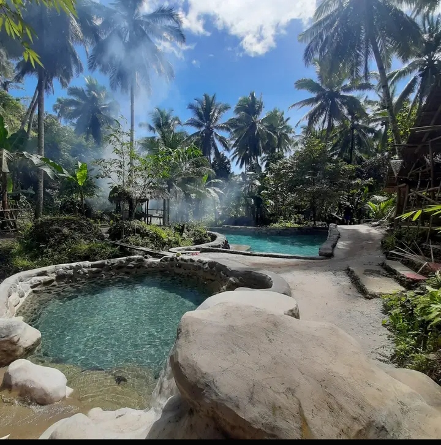
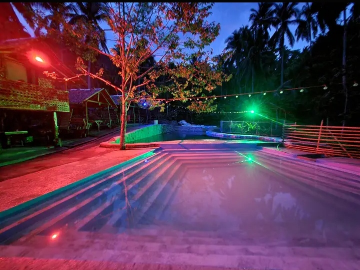

During day time

Panian tubod is a place where you can chill during summer days. it has 3 pools: First pool is is for kids that is 3ft-4ft deep, Second is the 5ft-7ft which is good for swimming( no diving to prevent accident). And the last one is form as square pool up to 8ft that has a stair design where you can sit and relax while in the water. During night time

If you want a night swimming they you can also go for an overnigth. You can drink and sing they had karaoke. and a place to stay when youre too drunk to go home, there's a cottage for you too stay